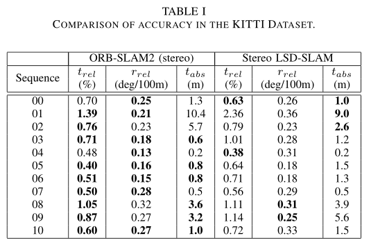

文章信息
题目: 《ORB-SLAM2: an Open-Source SLAM System for Monocular, Stereo and RGB-D Cameras》
作者: Raúl Mur-Artal and Juan D. Tardós
期刊: IEEE Transactions on Robotics
背景、目的、结论
背景:虽然基于单目的视觉SLAM是最为经济的方案，但是深度信息不能从单一相机观测到，导致地图的尺度和估计的轨迹是未知的,且系统自引导启动需要多视图生成初始映射。单目SLAM在探索时还存在尺度漂移问题并不能解决纯旋转问题。
目的:使用双目和RGB-D相机解决单目相机存在的问题。
结论:
- 第一个用于单目、立体和RGB-D相机的开源SLAM系统，包括闭环、重新定位和地图重用
- 基于BA方法与基于ICP和光度和深度误差最小化的最新方法相比具有更高的准确度
- 通过使用近、远立体点和单目观测，得到的立体结果优于最新的直接双目SLAM
- 提出了一个轻量化的定位模式，可以在地图被禁用时有效使用地图
提出了一个完整的包含单目，双目和RGB-D传感器的SLAM系统。能够在CPU标准下执行重新定位，回环检测和地图重用功能。
结果与讨论
在三个流行的数据集上进行评估，并与其他方法进行了比较。
- A. KITTI

B. EuRoC
C.